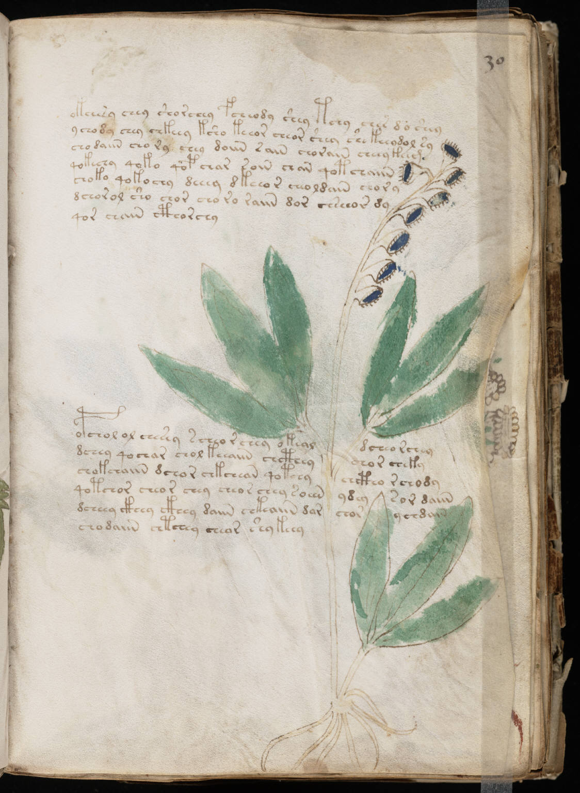

f30r
1okchesy chey shorchey fcheody shey tchy cher d o shey2ychody chey chkeey ksho keeor cheor shey she keeodol sy3chodaiin chory chey doiin saiin chorain cheey keem4qokechy qoko qopchar soin chan qotchaiin5choko qokochy deeey dkeeor cheoldain chory6dchorol sho chor cho ro raiin dor chseeor dy7qor chain cthorchy8opchol ol chesey scheo rchey okealdcheo rchey9dchey qochar chol keeaiin chctheychor cheky10chokchaiin dchor chkchean qotchychctho rchody11qotchor cheor chey cheor chey soiinydeysor daiin12dcheey ckhey ckhey daiin chkeaiin darchorychdain13chodaiin chtchey chear shy keey
